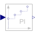

PIDiscrete-time PI controller |

|
Information
This information is part of the Modelica Standard Library maintained by the Modelica Association.
This block defines a discrete-time PI controller by the formula:
// State space form:
x(ti) = previous(x(ti)) + u(ti)/Td;
y(ti) = kd*(x(ti) + u(ti));
// Transfer function form:
y(z) = kd*(c*z-1)/(z-1)*u(z);
c = 1 + 1/Td
where kd is the gain, Td is the time constant, ti is the time instant of the i-th clock tick and z is the inverse shift operator.
This discrete-time form has been derived from the continuous-time form of a PI controller by using the implicit Euler discretization formula.
Parameters (2)
| kd |
Value: Type: Real Description: Gain of discrete PI controller |
|---|---|
| Td |
Value: Type: Real Description: Time constant of discrete PI controller |
Outputs (1)
| x |
Type: Real Description: Discrete PI state |
|---|
Connectors (2)
| u |
Type: RealInput Description: Connector of clocked, Real input signal |
|
|---|---|---|
| y |
Type: RealOutput Description: Connector of clocked, Real output signal |
Used in Examples (1)
|
ClockedWithDiscreteTextbookController Modelica.Clocked.Examples.SimpleControlledDrive Simple controlled drive with discrete textbook controller (period is not used in the controller) |